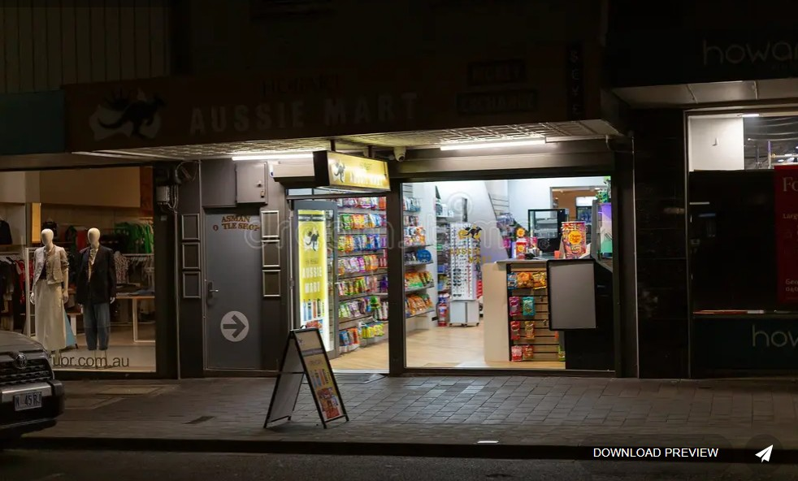

You finished a long work shift in Australia. You are tired, hungry, stressed, and trying not to waste money.
$47 Remaining
78%
12%
Low
It is 10:48 PM.
You just finished work. Your feet hurt. Your train arrives soon. Your phone battery is low.
You enter a busy Australian convenience store near the station.
The cashier speaks quickly. Customers are waiting behind you. You must:
| Question | Why It Matters | Talk About |
|---|---|---|
| What do you really need tonight? | Convenience stores make tired people buy more than they planned. | Name two essential items and one item you should avoid. |
| How much money can you safely spend? | A small purchase can become a habit if it happens after every shift. | Choose a maximum amount before you reach the counter. |
| What English might be difficult? | Fast questions feel harder when people are waiting behind you. | Practise asking the cashier to repeat or speak more slowly. |
| What should you check before leaving? | Stress can make you miss prices, receipts, bags, cards, or transport time. | Make a quick exit checklist with your partner. |
| Australian English | Meaning | Real Situation | Hidden Risk | Smart Response |
|---|---|---|---|---|
| Need a bag? | Do you want a shopping bag? | Checkout counter | Missing important question | "Yes please." |
| Card or cash? | Payment method | Paying quickly | Panic from fast speech | "Card please." |
| Servo | Gas station | Late-night shopping | Slang confusion | "Where is the nearest servo?" |
| 2 for 8 bucks | Promotion deal | Snack section | Impulse spending | "I only need one." |
| No worries mate | Friendly response | Customer service | Thinking problem is solved | Still double-check details |
| Situation | Emotional Pressure | Risk Clues | Possible Mistake | Smart Survival Move | Aussie Slang To Try | Survival English | What Happens Next |
|---|---|---|---|---|---|---|---|
| Energy drink temptation | Exhaustion after work | Convenience store pricing | Emotional spending | Buy only essentials and avoid emotional purchases when tired. | No worries | Show Hint"No worries, just water today." |
You save money for future emergencies. |
| Fast cashier English | Embarrassment | Long line behind you | Pretending to understand | Ask confidently when you do not understand. | Sorry mate | Show Hint"Sorry mate, could you say that again?" |
Your confidence improves over time. |
| Card declined | Public embarrassment | Low bank balance | Panic reaction | Stay calm and check your banking app carefully. | No dramas | Show Hint"No dramas, I'll try again." |
You avoid emotional panic and solve the problem faster. |
| Cheap hot food temptation | Extreme hunger | Daily overspending habit | Buying unhealthy food every shift | Think about your weekly budget, not only tonight. | All good | Show Hint"I'm all good, thanks." |
Your financial stability improves long term. |
| Train arriving soon | Panic and rushing | Time pressure | Forgetting important items | Slow down mentally before making decisions. | Cheers | Show Hint"I'll be quick, cheers." |
You reduce stress and avoid mistakes. |
| Phone battery almost dead | Anxiety and isolation | No charger nearby | Panic buying expensive charger | Carry emergency charging equipment before shifts. | Cooked | Show Hint"My battery's cooked." |
Better emergency preparation reduces future stress. |
| Wrong item scanned twice | Fear of confrontation | Total price looks too high | Paying silently | Always check receipts carefully before leaving. | Mate | Show Hint"Could you check this for me, mate?" |
You avoid losing unnecessary money. |
| Wallet missing | Shock and panic | Cannot pay for transport | Emotionally shutting down | Stay calm and retrace your recent movements carefully. | Not right | Show Hint"I'm not right, I lost my wallet." |
Calm thinking improves your chances of solving the problem. |
| Food expires tomorrow | Pressure to buy discounted food | Large yellow markdown stickers | Buying too much unnecessary food | Only buy what you realistically can finish eating. | Grab | Show Hint"I'll just grab one." |
You waste less food and protect your budget. |
| Unexpected medicine purchase | Feeling sick after work | Confusing medicine labels | Pretending to understand instructions | Ask staff clearly whenever health instructions are confusing. | Run me through it | Show Hint"Could you run me through it?" |
You make safer medical decisions. |
| Reflection Topic | Student Answer Space | Useful Sentence Starter |
|---|---|---|
| Best decision | Which choice protected your money, time, or safety? | "The smartest choice was... because..." |
| Hardest English | Which phrase was hardest to understand under pressure? | "I was confused by... so I could say..." |
| Emotional trigger | What feeling made the situation more difficult? | "When I feel tired or embarrassed, I usually..." |
| Real-life plan | What will you do next time you shop late after work? | "Next time, before I buy anything, I will..." |